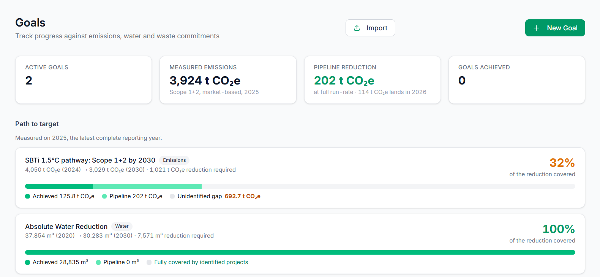
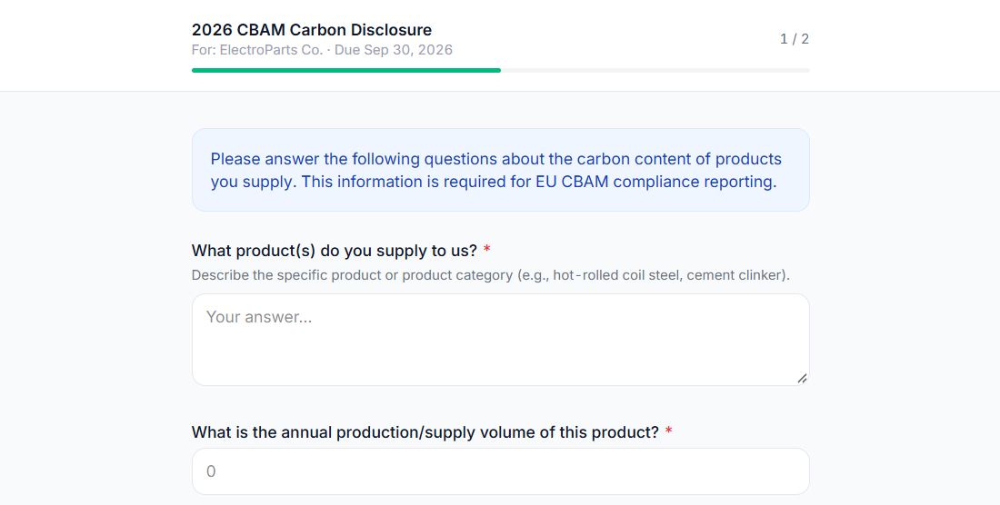

What's in it
Most teams pay for these separately.
Carbon accounting, supplier surveys, goals, disclosures and evidence all live in one app, built on the same data.
| Carbon accounting | Scope 1, 2 and 3. The emission factor and where it came from are saved with every entry. |
| Supplier surveys | Send a link for CBAM, EUDR, PFAS, carbon or your own questions. Suppliers don't need an account. |
| Goals and projects | Set targets, including an SBTi 1.5 °C pathway, and track your reduction projects against them. |
| Disclosures | TCFD, IFRS S2, ESRS, GRI and the California climate laws, all built from the same data. Anything you haven't answered yet is listed, so nothing gets skipped by accident. |
| Evidence | Attach the invoice or meter reading to the number it supports. Every change is logged. |
Screens
What it looks like
Each entry keeps its paper trail
Enter the activity data once and BROC does the math with a cited factor. Attach the invoice or meter reading, and when your auditor asks where a number came from, you can show them.

One set of data for every framework
Your data feeds TCFD, IFRS S2, ESRS, GRI and California's SB 253 and 261 at the same time. Write a narrative answer once and reuse it. For CSRD, you're only asked about the topics your double materiality assessment flagged.

See whether your projects will get you to the target
Set a goal, like an SBTi 1.5 °C pathway, and BROC shows how much you've already cut, how much your planned projects should cover, and the gap that's left.

Suppliers just click a link
No account and no password. Their answers go straight onto the supplier's record. CBAM answers feed the CBAM calculator, and supplier emissions feed Scope 3 Category 1.
